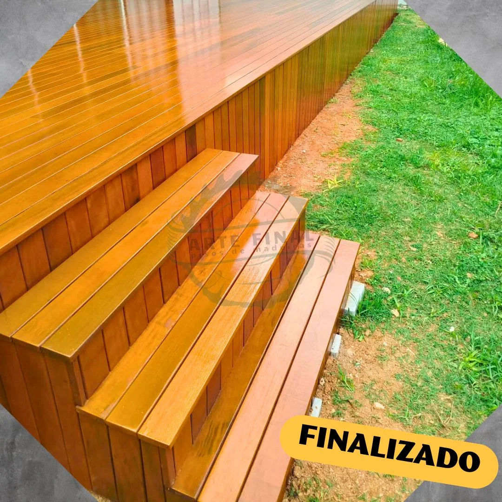

Lixamento de Pisos
Remoção de riscos, manchas, verniz antigo e imperfeições da madeira.
Especialistas em lixamento, restauração, instalação, verniz, decks e soluções em madeira com acabamento profissional.

Trabalho realizado pela Arte FinalSomos especializados em instalação, restauração e manutenção de pisos e estruturas de madeira.
Trabalhamos com atenção aos detalhes, materiais de qualidade e técnicas profissionais para recuperar a beleza natural da madeira e entregar resultados duradouros.
Da recuperação do piso à criação de áreas externas, cuidamos de cada etapa do serviço.
Remoção de riscos, manchas, verniz antigo e imperfeições da madeira.
Recuperação de tacos, assoalhos e pisos antigos, preservando sua beleza.
Proteção e acabamento para aumentar a durabilidade e valorizar a madeira.
Instalação de pisos, tacos e assoalhos com atenção ao nivelamento e acabamento.
Montagem, restauração, lixamento, aplicação e manutenção de decks de madeira.
Estruturas de madeira sob medida para jardins, varandas e áreas externas.
Serviços preventivos e corretivos para conservar pisos e estruturas de madeira.
Organizamos os projetos por área de atuação para mostrar com mais clareza nossa experiência em pisos, decks, restauração e quadras poliesportivas.
Execução de serviços de instalação, colocação, ajustes e acabamento de pisos.
Recuperação de pisos de madeira, preparação da superfície e acabamento com verniz.
Montagem, instalação, acabamento, revitalização e manutenção de decks de madeira.
Cuidados para renovar a aparência, proteger a madeira e prolongar sua vida útil.
Montagem, recuperação, demarcação e pintura de quadras, conforme a necessidade do projeto.
A Arte Final atua principalmente na prestação de serviços especializados para instalação, restauração, acabamento e manutenção. Também trabalhamos com venda de pisos e materiais de acabamento, oferecendo ao cliente a possibilidade de contratar o fornecimento do produto juntamente com a instalação.
Equipe especializada para execução dos serviços oferecidos pela Arte Final, desde preparação e instalação até acabamento, restauração e manutenção.
Fornecimento de pisos e materiais para o projeto, conforme disponibilidade, especificação e orçamento, com opção de contratação da instalação.
Fornecimento e instalação de pisos de madeira maciça, com execução profissional, ajustes, acabamento e orientação de manutenção.
Venda e instalação de pisos engenheirados, combinando acabamento de madeira natural com estrutura desenvolvida para maior estabilidade.
Fornecimento e instalação de pisos estruturados para projetos residenciais e comerciais, conforme especificação do ambiente.
Recuperação de tacos, assoalhos e outros pisos de madeira, incluindo reparos, lixamento, preparação e renovação do acabamento.
Preparação e aplicação profissional de vernizes nacionais e importados, escolhidos de acordo com o tipo de madeira e resultado desejado.
Venda e instalação de pisos vinílicos em diferentes padrões e sistemas, conforme disponibilidade e necessidade do ambiente.
Fornecimento e instalação de pisos laminados com opções de tonalidades e acabamentos para diferentes projetos.
Venda e instalação de forros para composição e acabamento de ambientes, com mão de obra especializada.
Fornecimento e instalação de rodapés para completar o acabamento do piso e proporcionar uma transição limpa entre parede e revestimento.
Montagem e instalação de decks de madeira, incluindo estrutura, acabamento, manutenção e revitalização.
Execução de serviços para quadras poliesportivas, incluindo montagem, preparação e recuperação conforme o escopo do projeto.
Serviços de demarcação, pintura e acabamento de quadras esportivas, realizados com atenção às medidas, linhas e acabamento final.
A Arte Final executa seus serviços com profissionais experientes e atenção a cada etapa do trabalho. O cliente pode contratar somente a mão de obra especializada ou, nos produtos disponíveis para venda, optar pelo fornecimento do material junto com a instalação.
Modelos, marcas, tonalidades e disponibilidade de pisos e materiais são confirmados no momento do orçamento.
Arraste o controle para comparar uma etapa de montagem com o resultado final.
Envie informações e, se possível, fotos do local pelo WhatsApp.
Analisamos o estado da madeira e o tipo de serviço necessário.
Você recebe uma proposta clara para o serviço.
Realizamos o trabalho com técnica, cuidado e atenção aos detalhes.
Entregamos a madeira renovada e pronta para valorizar o ambiente.
Sol, chuva e uso constante desgastam a madeira. A manutenção adequada ajuda a recuperar o aspecto e prolongar a vida útil de decks e estruturas externas.
Quero avaliar minha madeiraEnvie uma mensagem e conte o que você precisa.
Você pode enviar fotos pelo WhatsApp para facilitar a avaliação inicial.